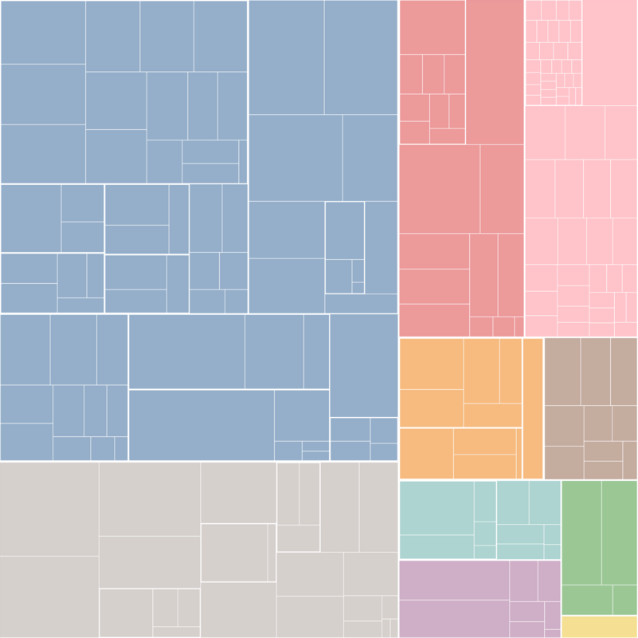
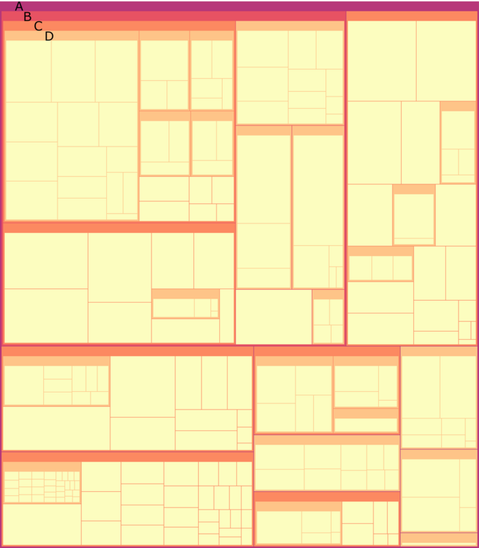
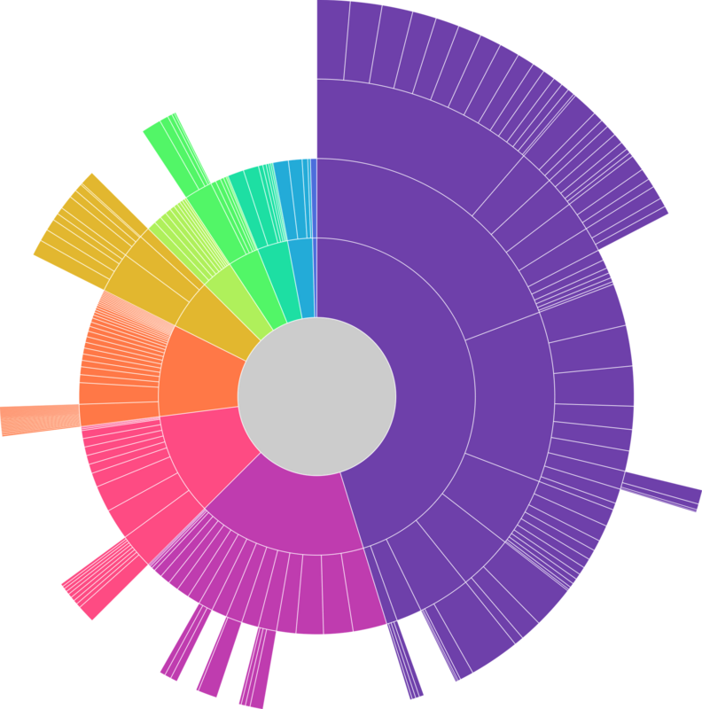

Historique
Les cartes de carrés (treemaps) ont été introduites pour la première fois par Ben Shneiderman et son équipe à l'Université du Maryland dans les années 1990. Leur objectif était de créer une méthode visuelle pour représenter les structures hiérarchiques de manière claire et compréhensible.
En 1998, Shneiderman et Wattenberg introduisent l'approche "slice-and-dice". Elle implique de diviser récursivement l'espace disponible en sections rectangulaires pour représenter la hiérarchie.
Depuis les années 2000, plusieurs variantes et améliorations des cartes de carrés ont été développées par différents chercheurs et praticiens. Des entreprises et des développeurs les ont également intégrés dans des logiciels d'analyse de données et des outils de visualisation.
Les cartes de carrés sont un outil de visualisation de données largement utilisé, offrant une représentation visuelle puissante et efficace des structures hiérarchiques.
Timeline de l’histoire de la dataviz
Pourquoi des cartes de carrés ?
Les cartes de carrés représentent, de manière efficace, des structures arborescentes complexes et leurs proportions relatives.

Pourquoi les utiliser?
- Les cartes de carrés permettent d’obtenir une représentation compacte en remplissant l'espace disponible avec des rectangles de tailles variables. Chaque boîte représente un nœud dans l'arborescence, et l’aire de la boîte est proportionnelle à la valeur ou à la quantité qu'elle représente.
- La taille des boîtes dans les cartes de carrés permet une comparaison visuelle immédiate des différentes catégories ou niveaux hiérarchiques. Les utilisateurs peuvent rapidement identifier les tendances et les éléments significatifs.
- Les cartes de carrés peuvent être rendues interactives, permettant aux utilisateurs d’agrandir la vue pour faire apparaitre les niveaux hiérarchiques inférieurs. L’interaction laisse l’utilisateur afficher des données supplémentaires, par exemple, sur survol de la souris.
Pourquoi ne pas les utiliser ?
- Les cartes de carrés ne conviennent pas aux données non hiérarchiques et doivent visualiser les parties d’un tout.
- Les cartes de carrés ne permettent pas de faire des comparaisons précises entre les catégories.
- Les cartes de carrés peuvent être un affichage graphique trompeur pour les données hiérarchiques, si les rectangles sont trop petits ou trop nombreux, si les couleurs ne sont pas claires ou cohérentes. Enfin, une mauvaise disposition ou une apparence des rectangles trop disparate peut donner lieu à de mauvaises interprétations.
- Pour les petits carrés, la visualisation devient illisible.
La carte de carrés et ses variantes
Carte de carrés “squarify”
Carte de carrés “Squarify”.
Les rectangles aussi proches que possible de la forme carrée. Cela facilite la comparaison visuelle des tailles entre les différentes zones.
Les rectangles ayant un aspect proche des carrés, cela conduit à un arrangement plus esthétique.
Carte de carrés “slice and dice”

Ce type de carte de carrés cherche à mettre en évidence les différents niveaux de données. Les zones rectangulaires sont créées en découpant récursivement la zone parente en rectangles plus petits pour représenter les sous-catégories, en alternant un découpage horizontale et verticale.
Cette conception est belle et aide à présenter clairement les informations hiérarchisées.
Carte de carrés avec arborescence imbriquée - Nested treemap
Nested treemap
Cette variante de carte de carrés applique un remplissage aux nœuds internes d'étiquette, révélant ainsi mieux la structure hiérarchique. Il est cependant moins compact qu’une carte de carrés standard.
Carte de carrés en rayon - Sunburst

Cette carte de carrés en rayon est une autre visualisation hiérarchique qui utilise des anneaux concentriques pour représenter différents niveaux de la hiérarchie. Chaque segment de l'anneau représente une catégorie ou un niveau.
Cette représentation est souvent utilisée par des logiciels utilisés pour examiner la taille des fichiers sur un disque dur.
Diagramme en stalactites - Icicle Plot
.png)
Aussi connu sous le nom de "dendrogramme", l'icicle plot est une représentation linéaire de la hiérarchie qui peut être utilisée pour afficher des données arborescentes. Chaque branche est une catégorie, et la longueur de la branche indique sa taille ou sa valeur.
Cette représentation est utilisée dans des outils de développement informatique, pour étudier les performances d’un logiciel, en montrant le temps de calcul de l’arborescence des fonctions du programme.
“Carte de carrés à bulles” - Circle packing - bubble treemap
.png)
Au lieu d'utiliser des rectangles, cette variante utilise des cercles imbriqués pour représenter la hiérarchie. L’aire de cercle est proportionnelle à la valeur qu'il représente.
Carte de carrés voronoi - Voronoi treemap

Cette carte propose de découper l’espace selon l’algorithme de Voronoï.
Testez par vous-même
Cette interface simple montre différents types de cartes de carrés réalisées à partir d'un même jeu de données.
Recommandations
Les données
Les données doivent être organisées de manière hiérarchique. Chaque élément dans la hiérarchie doit avoir une relation parent-enfant avec un autre élément.
Le format JSON est souvent privilégié pour les données.
Recommandation 1
- Limiter le nombre de niveaux
Une carte de carrés peut devenir difficile à interpréter si la hiérarchie est trop profonde.
Recommandation 2
- Interactivité Si possible, ajoutez des fonctionnalités interactives pour permettre aux utilisateurs d'explorer la carte de carrés. Cela peut inclure des infobulles, des filtres, des zooms, etc.
Outils
Sélection d’outils
Nous vous proposons des diagrammes, des variantes et des lignes directrices, mais peut-on les mettre en œuvre concrètement avec les outils graphiques ?
La liste des logiciels de visualisation de données est longue et en faire une analyse exhaustive serait fastidieuse et peu pratique à utiliser. Nous avons choisi quelques outils connus, facile d’accès pour des débutants et qui permettent d’exporter les graphiques dans un format vectoriel SVG (sauf pour l’outil Tableau Software).
Dans ce format, les diagrammes se composent d’un ensemble d’objets graphique (polygones, lignes, cercles et textes) qu’il est possible d’importer dans des outils de présentation tels que PowerPoint, Draw ou des outils vectoriels dédiés comme Illustrator ou son équivalent libre Inkscape. Il est alors possible de faire manuellement des modifications qui ne sont pas ou difficilement réalisables avec l’outil de dataviz.
Exemples
Les exemples qui sont proposés présentent des réalisations basiques. Pensez à sélectionner l’onglet correspondant au diagramme à barres.
EXCEL
En savoir +
- Tous les types de diagrammes à barres sont réalisables (n’hésitez pas à regarder des tutoriels pour les construire si besoin).
- Pour transférer un graphique au format SVG, sélectionnez le graphique dans l’onglet puis faire un copier-coller vers l’outil de dessins vectoriels ou de présentation.
GOOGLE SHEET (on line)
En savoir +
- Tous les types de diagrammes à barres sont réalisables (n’hésitez pas à regarder des tutoriels pour les construire si besoin).
- Pour transférer un graphique au format SVG, sélectionnez le graphique dans l’onglet puis en haut à droite du graphique, cliquez sur l’icone puis télécharger au format SVG.

TABLEAU SOFTWARE
Le site Tableau public propose de nombreux exemples de réalisation de diagramme à barres
En savoir +
- L’outil Tableau ne propose pas d’exportation au format SVG mais au format PDF. Dans ce format, avec les outils vectoriels, l’extraction des formes du graphique reste possible mais pas très pratique.

CALC OpenOffice
En savoir +
- Tous les types de diagrammes à barres sont réalisables (n’hésitez pas à regarder des tutoriels pour les construire si besoin).
- Pour transférer un graphique au format SVG, sélectionnez le graphique dans l’onglet puis faire un copier-coller vers l’outil de dessins vectoriels ou de présentation.

RAWgraph (on line)
En savoir +
- Cet outil en ligne simple ne permet pas de réaliser tous les types de diagrammes à barres.
- Sa simplicité d’utilisation et sa fonction d’exportation au format SVG le place comme une possible alternative à des outils plus complexes comme les tableurs.
Les langages de programmation
Sachez enfin, qu’avec les librairies graphiques associées aux langages de programmation R, Python ou JavaScript, il est possible de réaliser tous les diagrammes et les recommandations.
Liens vers le code de graphiques basiques :
JavaScript Observablehq (1)
R (R Graph Gallery)(2),
Python (Python Graph Gallery)(2),
JavaScript d3.js (d3.js Graph Gallery)(2) .
(1) Notebooks observablehq de l’association TDV
(2) Site de Yan Holtz (en anglais) et
Le site The Data Visualization Catalogue propose aussi des exemples réalisés avec de multiples outils ou langages de programmation (en anglais).